编者注：为全面反映企业的真实税负，提供会计与税务处理及其差异信息，《公开发行证券的公司信息披露编报规则第15号——财务报告的一般规定》对年度财务报告所得税调整提出了具体披露要求。通过对上市公司年报的分析发现，部分上市公司披露的所得税调整信息不正确、不规范，缺乏内在逻辑性。本刊对上市公司财务报告中所得税调整及其披露存在的问题进行了归纳总结，并结合案例对财务报告中所得税调整过程予以分析说明，旨在帮助有关各方正确披露和理解递延所得税资产、递延所得税负债和所得税费用信息。
上市公司年度财务报告所得税调整披露解析
为全面反映企业的真实税负，提供会计与税务处理及其差异信息，《公开发行证券的公司信息披露编报规则第15号——财务报告的一般规定》对年度财务报告所得税调整提出了具体披露要求。对2014年上市公司年报的分析发现，部分上市公司披露的所得税调整信息不正确、不规范，如当期应纳税所得额和会计利润的调整过程不符合所得税费用和会计利润的内在逻辑。本文主要对财务报告中与所得税调整相关的内容进行说明，旨在帮助有关各方正确披露和理解递延所得税资产、递延所得税负债和所得税费用信息。
本文的主要内容包括：一是说明现行所得税会计准则所采用的资产负债表债务法及其核算步骤；二是解释说明会计利润与所得税费用调整过程的披露要求；三是财务报表和附注中涉及所得税的各项目披露示例以及对会计利润与所得税费用调整过程中各项目之间的逻辑关系进行解析。
一、资产负债表债务法及其核算步骤
资产负债表债务法，是指将资产和负债的账面价值与计税基础差异对未来期间应纳所得税额的影响确认为递延所得税资产或负债。资产负债表债务法较为完全地体现了资产负债观，在所得税的会计核算方面贯彻了资产、负债的定义。比如，对账面余额100万元的固定资产计提减值准备60万元，会计上计提的减值在利润表上反映为一项费用“资产减值损失”，它导致当年利润总额减少；从税收角度，由于该减值尚未真正“实现”，税法不允许当期进行税前抵扣。在处置该固定资产时，假设不考虑折旧的影响，会计上抵减处置收入的金额只有40万元（账面余额减去减值准备），而按照税法规定抵减处置收入的金额仍为100万元，这会导致税法上确认的处置收益较会计上少60万元。我们会发现，会计上计提减值准备60万元这一事项对于公司的影响并不仅仅是计提当期，还包括在处置期间因为应纳税所得额的减少带来的税收利益。假设适用的所得税税率为25%，在应付税款法下，这个税收利益会体现在处置固定资产的年度，即在计提减值准备和处置固定资产年度，其对所得税费用的影响分别为零和-15万元；在资产负债表债务法下，在计提减值准备当年，公司根据固定资产的账面价值40万元与计税基础100万元的差额确认递延所得税资产15万元（（100万元-40万元）×税率25%），同时冲减所得税费用15万元，也就是说在计提减值准备当年，计提减值准备这一事项对于公司净利润的影响为45万元（60万元-15万元）。从这个例子中可以看出，在资产负债表债务法下，一项交易及其对于所得税的影响会体现在同一个期间。
资产负债表债务法核算时，通常需要经过如下几个步骤：
1.比较资产负债表上列示的资产、负债按照会计准则确定的账面价值与按照税法确定的计税基础；
2.对于两者之间的差异分为应纳税暂时性差异和可抵扣暂时性差异，符合确认条件的情况下，暂时性差异乘以适用的所得税税率，确定资产负债表日递延所得税负债和递延所得税资产的应有金额，并与期初递延所得税负债和递延所得税资产的余额相比，确定当期应予进一步确认的递延所得税负债和递延所得税资产金额或应予转销的金额，作为构成利润表中所得税费用的一个组成部分——递延所得税。
3.按照适用的税法规定计算确定当期应纳税所得额，将应纳税所得额与适用的所得税税率计算的结果确认为当期所得税，作为利润表中所得税费用的另外一个组成部分——当期所得税。
二、会计利润和所得税费用调节项目分析
《公开发行证券的公司信息披露编报规则第15号——财务报告的一般规定》要求公司披露所得税费用的相关信息，包括当期所得税费用，递延所得税费用本期发生额、上期发生额。15号编报规则还要求公司披露本期会计利润与所得税费用的调整过程，这个调节过程以会计上的利润总额为起点，以包含了当期所得税费用和递延所得税费用的所得税费用为终点。因此，从逻辑上判断，调节项目应当是未包含在利润总额却包含在当期或递延所得税费用计算中的项目，或者未包含在当期或递延所得税费用却包含在利润总额中的项目。实务中常见的调节表项目包括：
1.与税率相关的调整。通常包括按法定/适用税率计算的所得税费用、子公司适用不同税率的影响和税率变动的影响。调节表的起点是利润总额，需要将利润总额乘以适用税率，调整为所得税。在编制合并财务报表时，由于集团内公司所适用的税率可能有不同，公司首先用25%或者母公司的税率计算所得税，然后根据不同公司适用税率与25%或母公司税率的差异进行调整。当税率发生变动时，例如公司通过了高新技术企业的认证，未来3年适用税率从25%改为15%，公司应对己确认的递延所得税资产和递延所得税负债按照新的税率进行重新计量。根据企业会计准则，除直接计入所有者权益的交易或事项产生的递延所得税资产及递延所得税负债，相关的调整金额应计入所有者权益以外，其他情况下因税率变化产生的递延所得税资产及递延所得税负债的调整金额应确认为变化当期的所得税费用（或收益）。由于税率变动会影响递延所得税费用，而该事项不会体现在利润总额中，所以税率变动属于调节表的调节项。
2.永久性差异。包括非应税收入、不得扣除的成本、费用和损失等。当期发生的永久性差异，例如不得税前抵扣的罚款，包含在利润总额中，但在计算当期所得税费用时，由于不能税前扣除而被剔除。也就是说，在考虑纳税调整后，该事项的发生不会影响当期所得税费用，即该事项不会体现在当期所得税费用中；由于这些永久性差异不会导致公司资产或负债的计税基础发生变化，并进而导致递延所得税资产或递延所得税负债的变化，故不会体现在递延所得税费用中。因此，永久性差异属于包含在利润总额中，但不会包含在所得税费用中的调节项目。
3.未确认递延所得税资产的影响。与未确认递延所得税资产相关的调节项目通常包括：本期未确认递延所得税资产的可抵扣暂时性差异或可抵扣亏损的影响；使用前期未确认递延所得税资产的可抵扣亏损的影响。递延所得税资产以在未来期间很可能获得的用来抵扣可抵如暂时性差异、可抵扣亏损和税收抵减的应纳税所得额为限进行确认，因此公司在因可抵扣暂时性差异确认相关的递延所得税资产时，需要对未来的应纳税所得额进行判断。如果公司认为未来没有足够的应纳税所得额，未确认与当期产生的可抵扭亏损或可抵如暂时性差异相关的递延所得税资产，则该项目应体现在调节表中，因为该可抵扣亏损包含在利润总额中，但是不影响当期所得税费用，又没有确认递延所得税资产从而不影响递延所得税费用，未包含在所得税费用中。同理，如果公司以前年度判断未来期间不能产生足够的应纳税所得额未确认与可抵扣暂时性差异相关的认递延所得税资产，但公司实际产生了足够的应纳税所得额利用了可抵扭亏损也会产生调节项目。
4.调整以前期间所得税的影响。如对以前年度所得税进行汇算清缴的结果与以前年度确认的金额不同从而调整本年所得税费用的，则应在调节表中体现，因为该项目不会体现在利润总额中，却反映在当期所得税费用中。
综上所述，调节表中所包含的调节项目或者是包含在利润总额中，却不包含在递延或当期所得税费用中，如永久a性差异:或者是包含在所得税费用中，却未包含在利润总额中，例如税率变动产生的影响等，同时包含在利润总额和所得税费用中的项目不会出现在调节表中。
实务中，在编制该调节表时存在一些常见的错误：
1.将确认了递延所得税的暂时性差异误确认为调节项目某些影响当期损益的项目，当公司对于其产生的应纳税或可抵扣暂时性差异确认了递延所得税资产或负债时，相应的金额会包含在递延所得税费用中，由于该项目同时反映在利润总额和所得税费用中，不会体现在调节表中。以上述计提固定资产减值准各60万元为例进行验算；如果公司对于该60万元可抵扣暂时性差异确认了递延所得税资产，则会相应冲减所得税费用15万元。假如当期仅有该一项业务，会体现为当期所得税费用为0，递延所得税费用为-15万元，合计所得税费用-15万元。调节表中，本年利润总额为60万元，按适用税率25%计算的所得税费用为15万元，无其他调节项目，故所得税费用为-15万元。调节表的最后结果与所得税费用一致。相反，如果公司未对该可抵扣暂时性差异确认递延所得税资产，则该项目会体现在调节表中。
2.调节项目误以税前金额列示
如前文所述，调节表以利润总额为起点，乘以适用税率得到相应的所得税金额，然后在这个金额的基础上加减调节项目，最终得到所得税费用。调节项目应当是暂时性差异对于所得税的影响而非暂时性差异本身。例如，有的上市公司将可抵扣亏损的金额直接列示为调节项目是不正确的。
三、所得税调整披露示例
为正确理解和披露递延所得税资产、递延所得税负债和所得税费用，下文列示了某上市公司的所得税相关披露，并对财务报表和附注中所得税各项目的逻辑关系进行分析。
（一）在合并资产负债表中的列示
某上市公司在合并资产负债表中列示的递延所得税资产和递延所得税负债如表1所示（节选）。
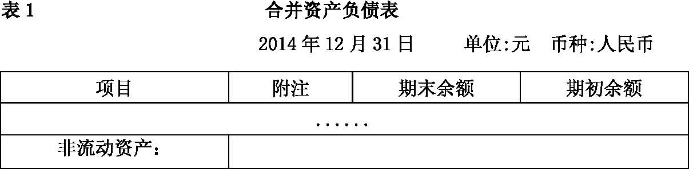
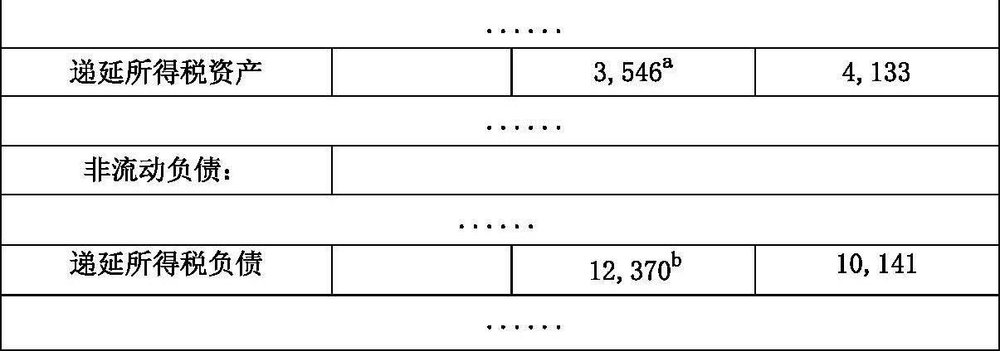
（二）在合并利润表中的列示
某上市公司在合并利润表中列示的所得税费用如表2所示（节选）。
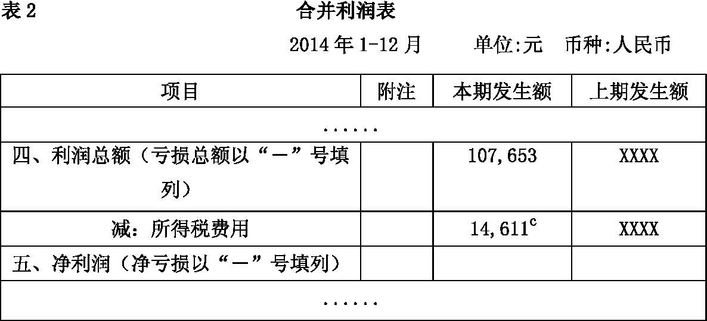
（三）在相关附注中的列示
某上市公司在相关合并报表附注中列示的递延所得税资产和递延所得税负债如表3-1至表3-5所示。
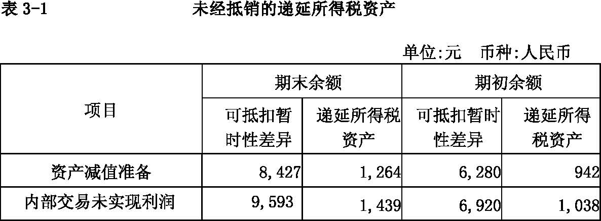
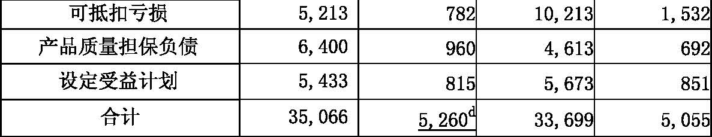
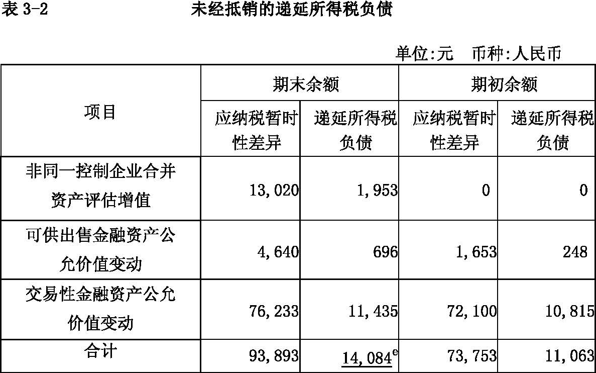
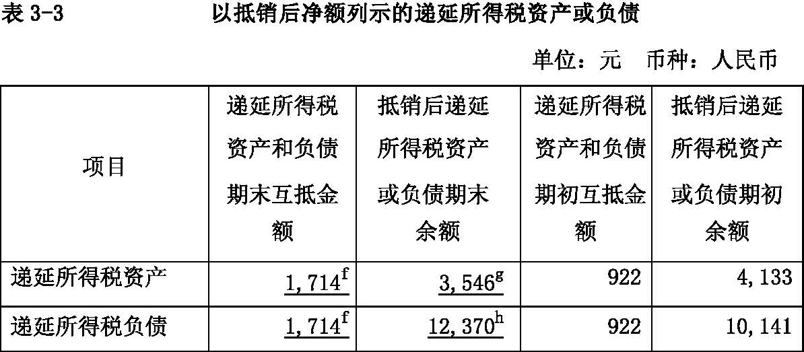
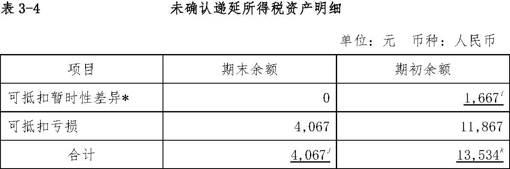
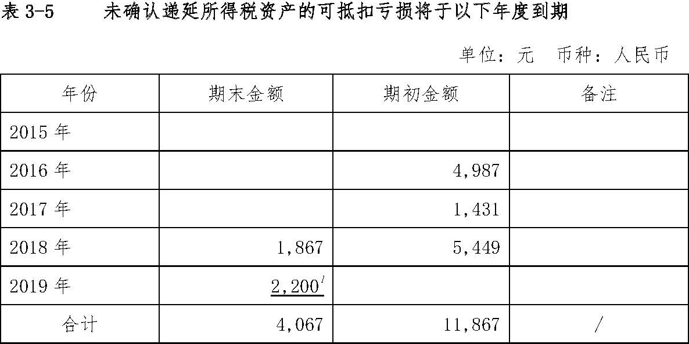
某上市公司在相关附注中所列示的得税费用如表4-1至表4-2所示。
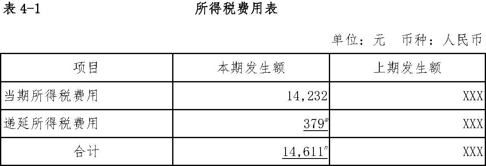
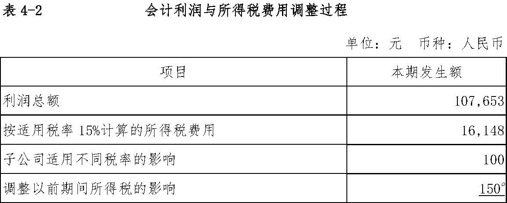
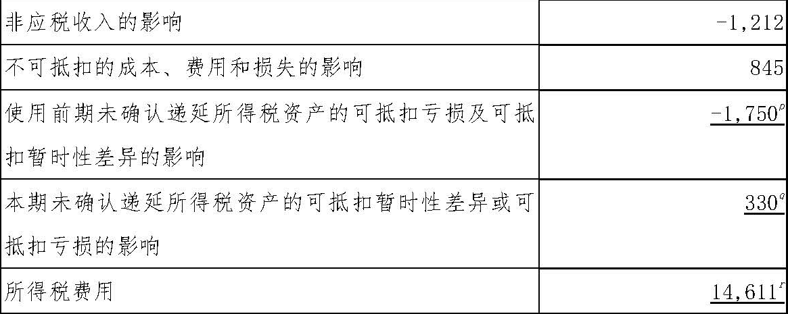
（四）所得税调整披露数据之间逻辑关系解析
上例中财务报表以及各附注之间存在着一定的逻辑关系，具体分析如下：
（1）资产负债表余额与附注一致，即资产负债表中递延所得税资产和递延所得税负债金额（表1，a、b）应当分别与附注中抵销后的递延所得税资产和递延所得税负债金额（表3-3，g、h）相同。
（2）递延所得税附注中未经抵销的递延所得税资产合计金额（表3-1，d）减去递延所得税附注中递延所得税资产负债互抵金额（表3-3，f）后，应与抵销后递延所得税资产金额（表3-3，g）相等；递延所得税附注中未经抵销的递延所得税负债合计金额（表3-2，e）减去递延所得税附注中递延所得税资产负债互抵金额（表3-3，f）后，应与抵销后递延所得税负债金额（表3-3，h）相等。
（3）利润表当期发生额与附注一致，即利润表中所得税费用金额（表2，c）与所得税费用附注中所得税费用合计金额（表4-1，n）相同。
（4）所得税费用附注中中所得税费用合计金额（表4-1，n）与会计利润与所得税费用调节表中调节后的所得税费用（表4-2，r）相同。
（5）对于递延所得税资产、递延所得税负债期初期末的变动，结合公司实际业务，分析如下表。
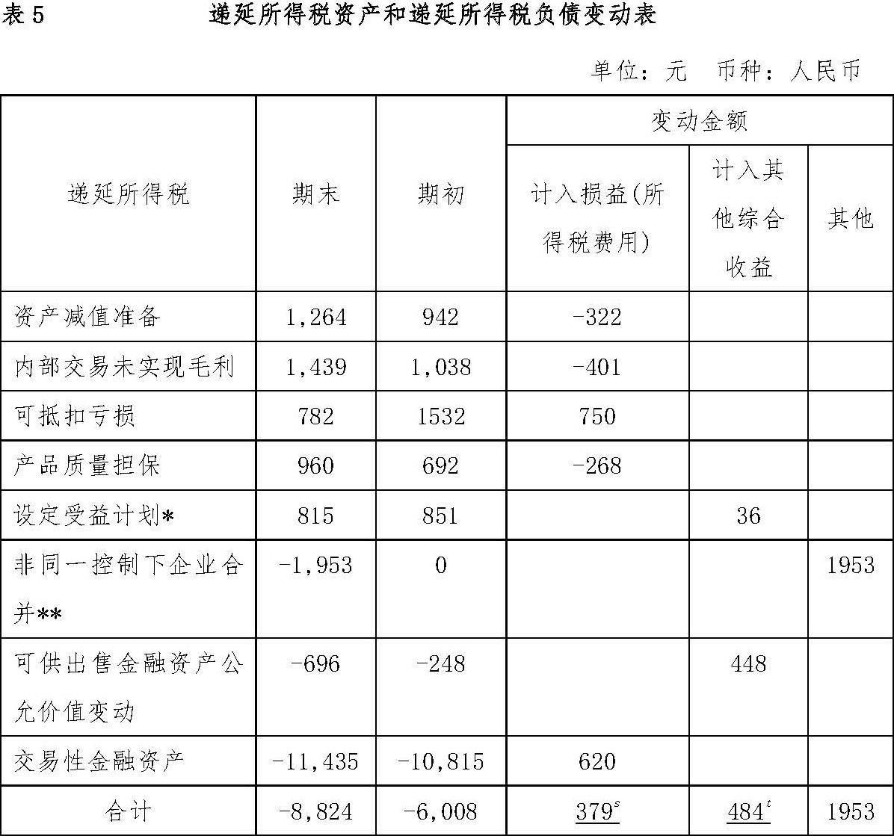
注：
*本例中设定受益计划的本期变动全部由精算损益引起，在支付设定受益计划负债时税务允许抵扣。需要说明的是，实务中，对于设定受益计划的税务处理不完全统一。如果支付设定受益计划负债时当地税务机关不允许抵扣，则这属于一项永久性差异，不能体现在可抵扣暂时性差异中。
**本例中企业合并是在本年12月31日发生，被合并方可辨认净资产中无其他递延所得税。
表5中计入损益的金额379（表5，s）与所得税费用附注中“递延所得税费用”（表4-1，m）相等。其他的勾稽关系，例如表5中计入其他综合收益的金额484（表5，t）与其他综合收益附注的勾稽关系等，这里就不再一一列举了。
（6）所得税费用附注会计利润与所得税费用调节表中“本期未确认递延所得税资产的可抵扣亏损及可抵扣暂时性差异的影响”（表4-2，q）与递延所得税附注中未确认递延所得税资产的可抵扣亏损到期表中最新一期可抵扣亏损（表3-5，1）×适用税率一致。本例为2019年到期的亏损2,200×税率15%=330。本例中期初未确认递延所得税资产的可抵扣暂时性差异1,667（表3-4，i）本年已使用，本期没有新增的未确认递延所得税资产的可抵扣暂时性差异。
（7）所得税费用附注会计利润与所得税费用调节表中“使用前期未确认递延所得税资产的可抵扣亏损和暂时性差异的影响”（表4-2，p）与递延所得税附注未确认递延所得税资产的可抵扣亏损和暂时性差异的变动扣除上条的影响后×适用税率一
致。本例为[13,534-(4,067-2,200)]×15%=1,750。
（8）如对以前年度所得税进行汇算清缴的结果与以前年度确认的金额不同从而调整本年所得税费用的，则应在所得税费用附注会计利润与所得税费用调节表中体现。本例金额为150（表4-2，o）。